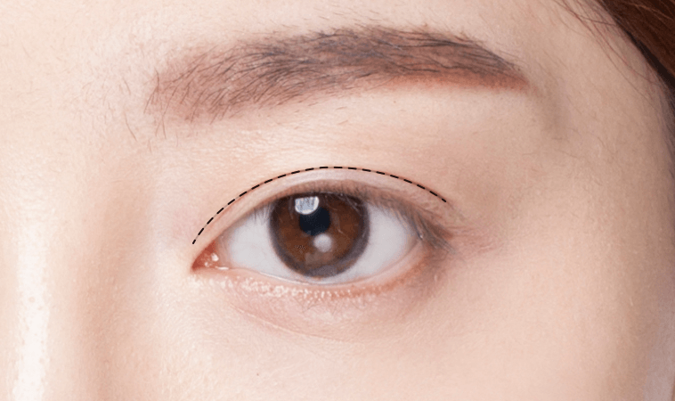

원래 내 것같은
자연스럽고 아름다운
#비절개
쌍커풀
-

수술 시간
30~40 분
-

마취방법
수면/국소마취
-

실밥제거
2~3일 후
-

내원치료
1~2회
-

회복기간
개인차 있음
쌍커풀 수술이란?
쌍커풀 수술은 성형외과 수술 중 가장 흔한 것으로 알려져 있습니다.
그래서 쌍커풀 수술이 마치쉬운 수술처럼 인식되는 경우가 있습니다.
그러나 눈은 사람의 인상을 결정하는 매우 중요한 부분이며 섬세한 구조물로
이루어져 있기 떄문에 쌍커풀 수술은 실제로는 세심한 주위를 필요로 하는
수술이며경험과 노하우가 풍부한 성형외과 전문의에게 시술 받아야 합니다.
유형에 따른
쌍커풀 수술법 방법

VS

- 자연스러운 눈매를 원하는 경우
눈꺼풀이 심하게 두껍지 않은 경우
흉터와 붓기가 거의 없길 원하는 경우
절개 방식이 부담스러운 경우 - 수술대상
- 눈꺼풀이 두꺼워 눈매가 답답해 보이는 경우
눈꺼풀이 많이 쳐져 있는 경우
풀리지 않는 또렷한 라인을 원하는 경우
-
- 피부를 절개하지 않기 때문에 흉터가 거의 미미
절개법에 비해 회복이 빠름
- 피부를 절개하지 않기 때문에 흉터가 거의 미미
- 장점
-
- 가장 많이 하는 방법
절개를 통해 정확한 교정이 가능해 효과가 높을 수 있음
- 가장 많이 하는 방법
쌍커풀의 시작점에 따라 다른
쌍커풀 라인의 종류
쌍커풀의 시작점이 눈꺼풀 안쪽인지 바깥쪽에서 시작하는지로 구분할 수 있습니다.
자신에게 어울리는 눈매로 수술하는 것이 성공적인 쌍커풀 수술을 하는 지름길입니다.
-
인폴드
- 한국인에게 가장 적합한 일반적인
쌍커풀 유형 - 몽고주름이 심하지 않은 경우 가장 선호
- 눈 앞쪽에는 라인이 보이지 않음
- 쌍커풀 라인의 높이와 쌍커풀 라인이
작은 눈의 변화가중앙에서 바깥쪽으로
갈수록 커짐
- 한국인에게 가장 적합한 일반적인
-

아웃폴드
- 서양인에게 쉽게 볼 수 있는 라인
- 처음부터 바깥에서 시작해서 무지개처럼
평행하게 끝까지 가는 선 - 절개법보다는 매몰법으로 아웃을
만드는 것이 좋음 - 피부가 두껍거나 눈이 작은 경우는 특히 주의 필요
-
인-아웃폴드
- 인폴드와 아웃폴드의 중간 형태
- 바깥에서 시작해서 바깥으로 가는 것은
아웃과 같음 - 처음부분이 아주 좁고 뒤로 갈수록 선의
두께가 넓어짐 - 기본적으로 눈이 길고 눈두덩이 두텁지
않는 경우 가능(경우에 따라 약간 티가
나므로 세심한 결정 필요)
비절개
쌍커풀
4poin의 바늘 구멍을 만들고 그 구멍을 통해 실을 한줄로 통과시켜 매듭을 묶어 주어 유착을 만들어주는 수술 방법
다른 수술과 달리 일반적으로 티가 나지 않으며, 일상생활에 지장을 거의 주지 않습니다.
원래 있던 라인인 것처럼 자연그러우면서 풀리지 않는 라인을 완성할 수 있다는 장점이 있습니다.
-

1
수술전
-
2
작은 절개창
-

3
단매듭 연속 매몰법
-
4
한 가득 실로만 수술
-

5
봉합 필요 없음
-
6
수술 후
비절개 쌍커풀 핵심포인트
시원하고 또렷한 눈매를 위해 연세자연미는
자세한 상담과 진단을 통해 가장 효과적인
방법으로 수술을 진행합니다.


쌍커풀 라인을 아름답고
자연스럽게 살리는 디자인감각
환자의 이미지에 맞게 아름답고 자연스럽게
살려내는 디자인 감각을 지니고 있습니다.